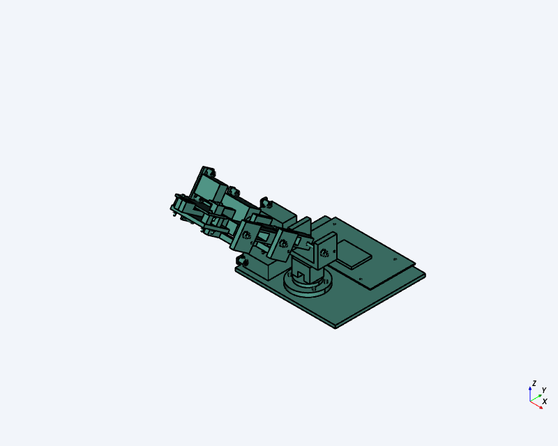
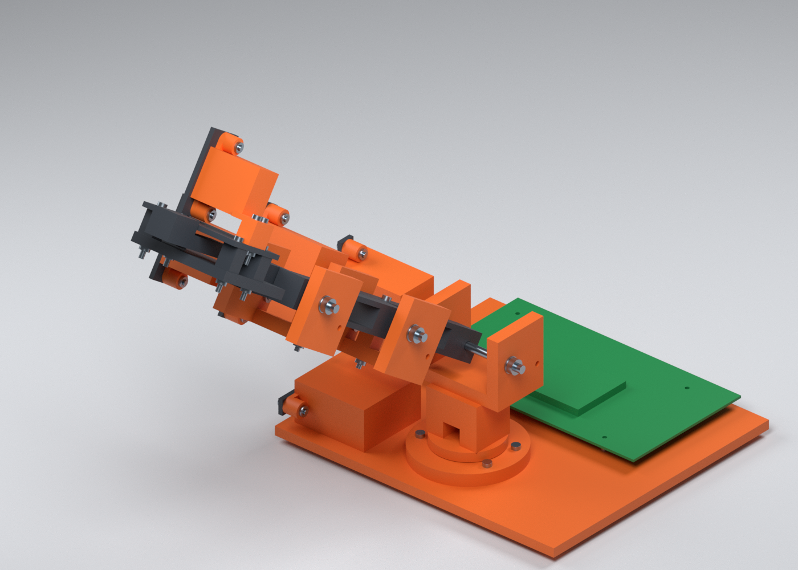
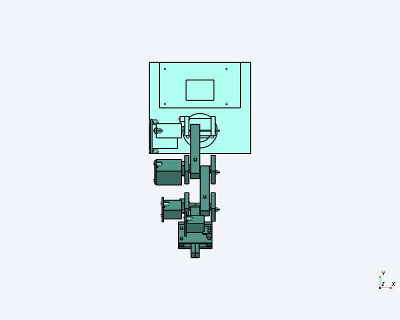
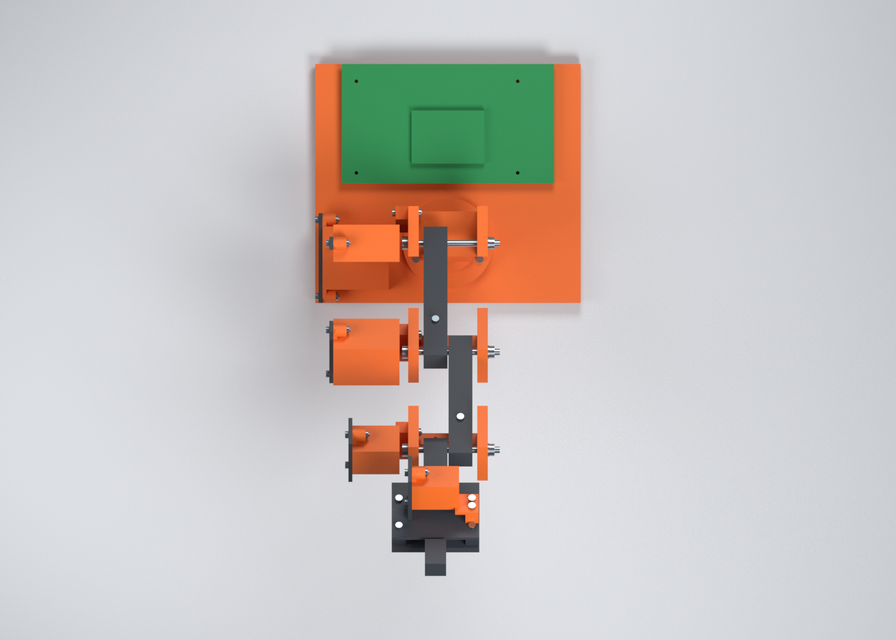
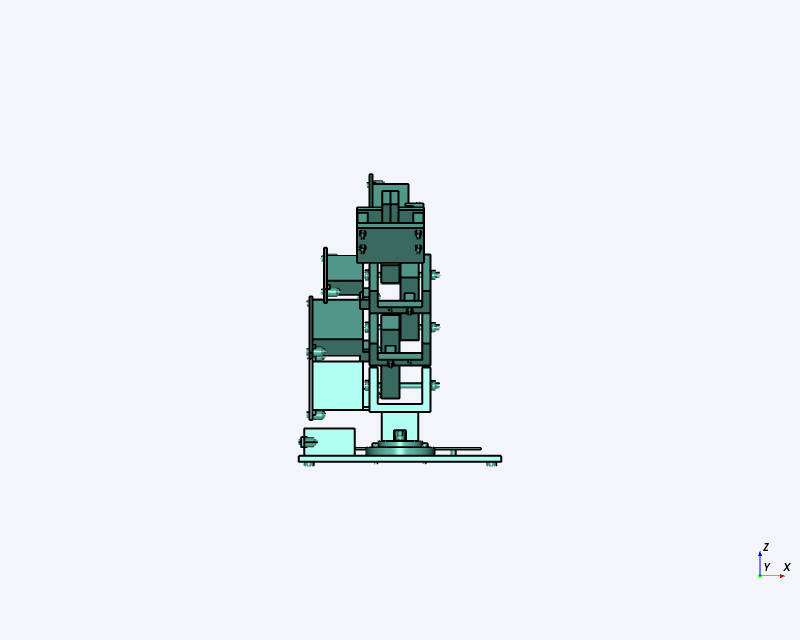
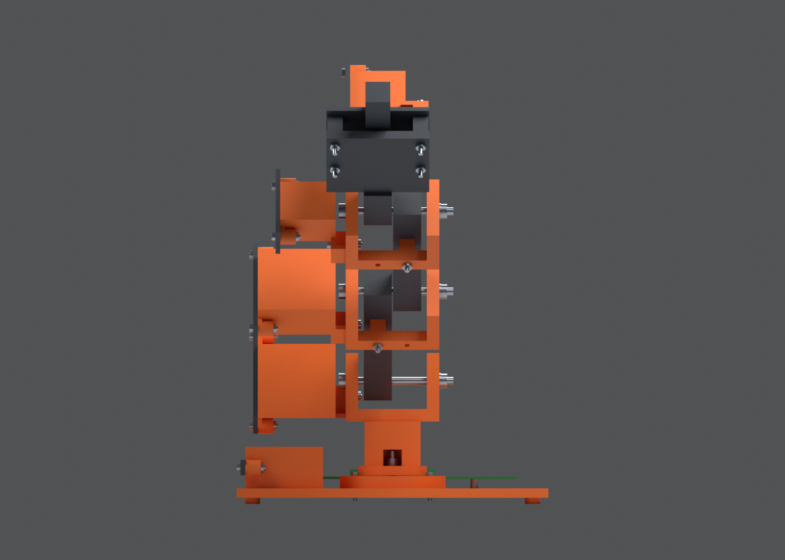

Wright · SteveCAD · Blender · digital prototype
A printable tabletop robot-arm concept
Revision 7 combines an industrial-style articulated arm, a parallel gripper and an open electronics bay for the official Raspberry Pi CM5 IO Board. This supplement curates the exact exported geometry and final native renderings alongside the saved process evidence.
The original process completed, but its review contains FAIL and UNVERIFIED findings. This supplement retains them and adds scoped evidence. Physical printing, assembly and powered operation have not been tested.
Deliverable files
The print kit contains nominal millimetre meshes in the declared build orientations. All 18 are closed, connected, positively wound and inside a 220 × 220 × 250 mm build volume. Maximum STEP-to-mesh volume error is below 0.1%. Support, bridge, layer, material and physical-fit checks remain separate.
What the digital evidence proves
| Subject | Finding and scope | Evidence |
|---|---|---|
| Exact revision / geometry | Revision 7 has 110 valid placed solids, 831 faces and volume 783,118.7196 mm³. Component sources, native body records, placements and joint records match revision 6; only print metadata and notes changed. This is not a provider-native topology-difference certificate. | Comparison; STEP manifest |
| Printable file integrity | 18 definitions / 28 quantities; inverse assembly placements, declared proper rotations and bed translation verified. Export closure, connectivity, winding and transform checks pass. | Oriented verification; World mesh checks |
| Fit and motion | Five named poses each checked 5,995 pairs with no reported fit issues. The 8-second native path sampled 33 states and reported no new collisions. This does not prove continuous clearance, every joint combination or the explicit 0.4 mm minimum at every sample. | Native observation register |
| Electronics reserve | Conservative actual B-rep bounds exclude the declared 25 mm board-top reserve in five named states and 33 path samples. The actual CM5 cooler, cable and connector envelopes remain unverified. | Reserve check |
| Presentation | Three native renderings use the exact checked STEP-derived meshes and corresponding CAD orientations. Materials and lighting are presentation choices. Earlier AI derivatives changed visible details and remain diagnostic only. The saved workflow still needs binding to this renderer. | Rendering provenance |
Isometric comparison


Top comparison


Front comparison


Actual CAD motion playback
8 seconds · 1280 × 720 · 24 fps · H.264 / AAC MP4. Playback uses revision-7 STEP triangles with the recorded native joint tree, axes, coupling ratios and keyframes. It is a neutral CAD viewer, not a physical robot or new collision simulation.
Motion source and frame provenanceOriginal requirement results
These are the recorded validation-stage results, retained unchanged. New evidence above does not rewrite a saved test plan or turn an original failure into acceptance.
| ID | Original status | Recorded observation |
|---|---|---|
| R01 | UNVERIFIED | Revision 7 has the same global 110 instances, 110 solids, 831 faces, bounds and 783118.7195908069 mm3 volume as revision 6; no per-instance coincident-body/topology diff or native revision-diff record was produced |
| R02 | PASS | 110 instances, 110 solids, 18 printed definitions, 28 printed instances, zero component errors; source and native joints remain readable/editable |
| R03 | PASS | Built units mm and deg; native captures report CAD Z-up, front from -Y and right from +X |
| R04 | UNVERIFIED | Tray local envelope is exactly 200 x 180 mm, but no explicit complete stationary-group selection bounding box was measured |
| R05 | UNVERIFIED | PCB bounds are X[-80,80], Y[90,180], Z[12,13.6] mm and captures show it rearward; exact reserved-bay intersection volumes were not reported for the five states |
| R06 | PASS | 100.0 mm, 90.0 mm, sections 18.0 x 18.0 mm, upper/palm X=-9.4 mm and forearm X=+9.4 mm |
| R07 | PASS | Machining inspection found 5.4 mm pitch bores and 5.0 mm shafts; derived radial gap=(5.4-5.0)/2=0.20 mm; pitch axes are -X with 18 mm link/palm and 8 mm yoke-cheek through lengths; yaw is the specified +Z axis |
| R08 | UNVERIFIED | Each named fit checked 5995 pairs with zero issues and 25 explicit zero-overlap seated pairs; the 33-sample path reported zero collisions, but did not report every path-sample minimum distance |
| R09 | FAIL | Only four unique cradle component definitions are present (saddle_yaw, saddle_large, saddle_small, saddle_gripper), used for five instances. Every reported cradle body is one solid, but isolated boss-web volumes were not computed |
| R10 | FAIL | BOM contains 25 M3 bolts and 25 M3 nuts, plus 1 yaw shaft, 3 pitch shafts, 8 washers and 4 M5 nuts. Source exposes explicit printed-seat contacts but no explicit hardware component-pair contact declarations or complete measured stack-order table |
| R11 | PASS | All four rotary directions match exactly; point-to-required-line distances are 0.0 mm; limits and named poses match; coupled fingers each move 12.5 mm for 25 mm opening |
| R12 | PASS | Five checks clear with zero issues; linear home/reach/open/folded/home animation is 8.0 s, 33/33 samples clear and zero collisions |
| R13 | PASS | 18 definitions are individually represented in the BOM. Native local bounds mapped by their declared -Z/+Z/+X orientations all fit; largest is tray at 200 x 180 x 10 mm |
| R14 | PASS | One FDM run completed with PETG metadata, 1.2 mm wall threshold and 220 x 220 x 250 mm volume. Selection scoping was unavailable in the resulting check, so findings cover the whole design and are classified by exact component identity; purchased standoff 1.15 mm and washer 1.00 mm are the two errors |
| R15 | PASS | PCB 160 x 90 x 1.6 mm at required bounds; CM5 55 x 40 x 4.621 mm; four 6 mm standoffs at required XY points; three MG996R and two MG90S envelopes with specified native dimensions. Exact full provenance-hash preservation belongs to creation metadata and was not revalidated geometrically |
| R17-CAD | PASS | One isometric, one top and one front orthographic capture were produced for revision 7/build 780f3196-07b2-4590-b102-1cdd9a73b6cf |
Work needed before a physical robot
- Measure the actual motors, servo ears, output axes, splines, horns and available hardware. MG996R × 3 and MG90S × 2 remain provisional clearance references.
- Resolve real yaw and gripper drive transmission, hardware bearing contacts, measured stack order and retention. Simplified joint coupling is not a manufactured mechanism.
- Complete clearance and intended-contact checks at the required scope, screen each actual print orientation and inspect sliced supports and bridges.
- Verify actual CM5 IO Board connectors, cooling and cables; board fastening screws are proposed additional hardware and are not in the 110-instance model.
- Test strength, stability, load, torque, physical fit and controls after printing and assembly. No physical or user acceptance is implied.
Declared digital ranges: yaw −60..60°, shoulder −30..60°, elbow −45..75°, wrist −45..45°, gripper opening 0..25 mm. Upper-arm and forearm centre distances are 100 and 90 mm.